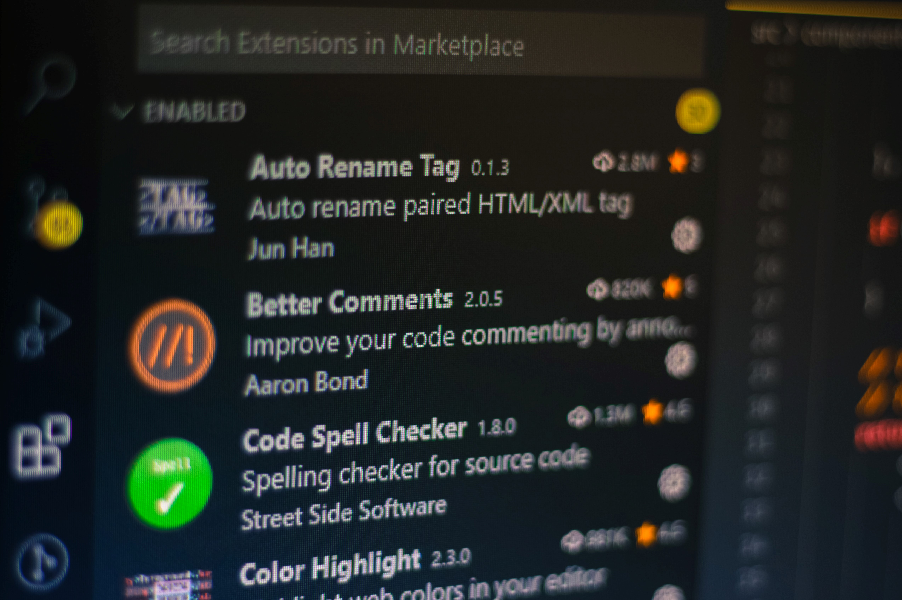

Top VS Code Extensions for front end Developers
Live Server
This cool extension by Ritwick Dey creates a development local server for your static and dynamic pages. A go-live button appears on your task bar so you can seamlessly run your code as a development server. It also comes with a shiny feature: Live Reload which reloads the page as soon as you save your work. Pretty awesome.
Live Sass Compiler
This extension by Ritwick Dey compiles your scss files into css files just as swiftly and as real-time as node-sass. With a watch-my-sass button at the task bar it can show a real-time preview of the compiled styles in your preferred browser, also with the Live Reload feature.
Javascript Code Snippets
This extension by Charalampos Karypidis with more than 2million downloads and counting provides javascript code snippets in ECMAscript 6 syntax while using a javascript files and other files like Typescript, Javascript React, Typescript React. NPM Image for post NPM This is the official Node Package Manager support on VS Code. It helps in to manage the package.json file in every imaginable way. It flags warnings for dependencies that are defined but not installed, or the ones that are installed but not defined in the package.json, it also indicates discrepancies in version control of packages. It also provides for quick run of npm commands with easy shortcuts.
ESLint
Here is for all the linting for your Javascript and jsx. Plug-able and makes sure you stick to standard practices like indentation and positioning and many more. It is one of the most downloaded extensions in VS Code with almost 12 million downloads.
Prettier
Prettier This very popular extension by Esben Petersen. It currently boasts of having almost 4 million downloads. It helps format Javascript code, colors keywords to make your code easily readable. There are similar extensions and one of the popular ones is beautify (which is also available on the marketplace).